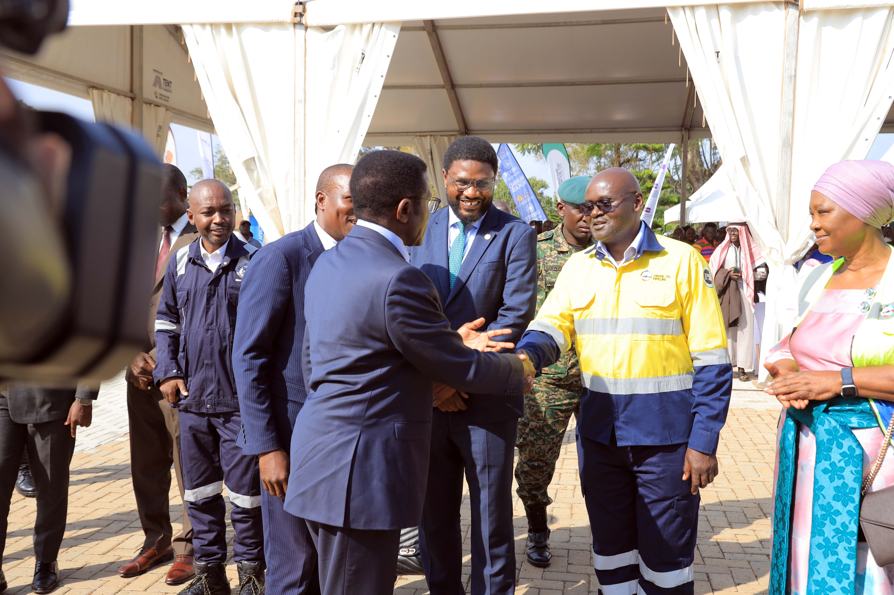

Health
EACOP AND BUGANDA KINGDOM GROUNDBREAK CONSTRUCTION OF KABAKA DAUDI CHWA II EACOP STADIUM BUDDU IN MASAKA CITY.
East African Crude Oil Pipeline (EACOP) Ltd., in partnership with Buganda Kingdom has today broken ground on the construction of Kabaka Daudi Chwa II EACOP Stadium Buddu in Buddu Country-Masaka City. This initiative aligns with EACOP’s Social Economic Investment pillar- youth empowerment that focuses on deliberate interventions towards the social and economic wellbeing of communities along the pipeline.
Read Full Story →,Managing Director KCB Bank Ugandaposes for a photo with some KCB Bank staff at the Building Great Men Mentorship Program Launch .jpg.jpeg)

, Deputy Speaker of Parliament, together with other walkers on Sunday.jpeg)
, having a light moment with some of the women who attended the launch at the Mayor's Gardens in Gulu City..JPG)